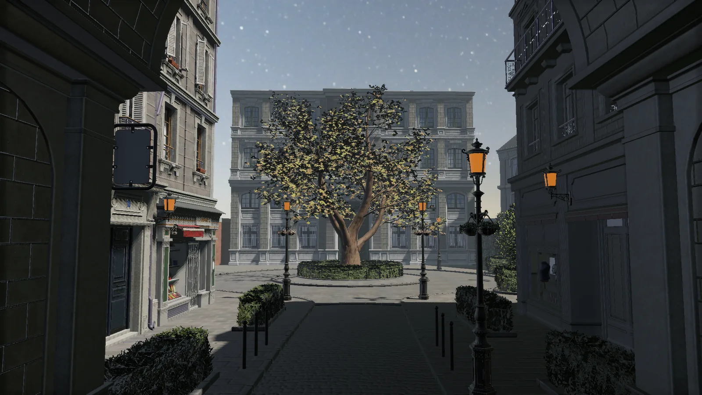
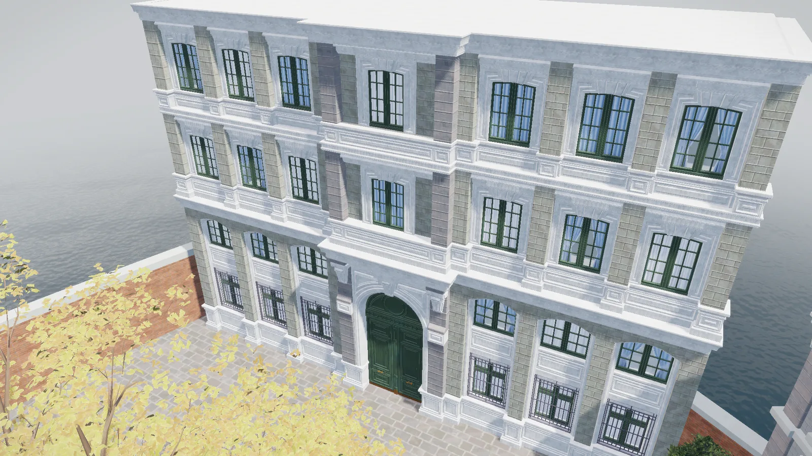
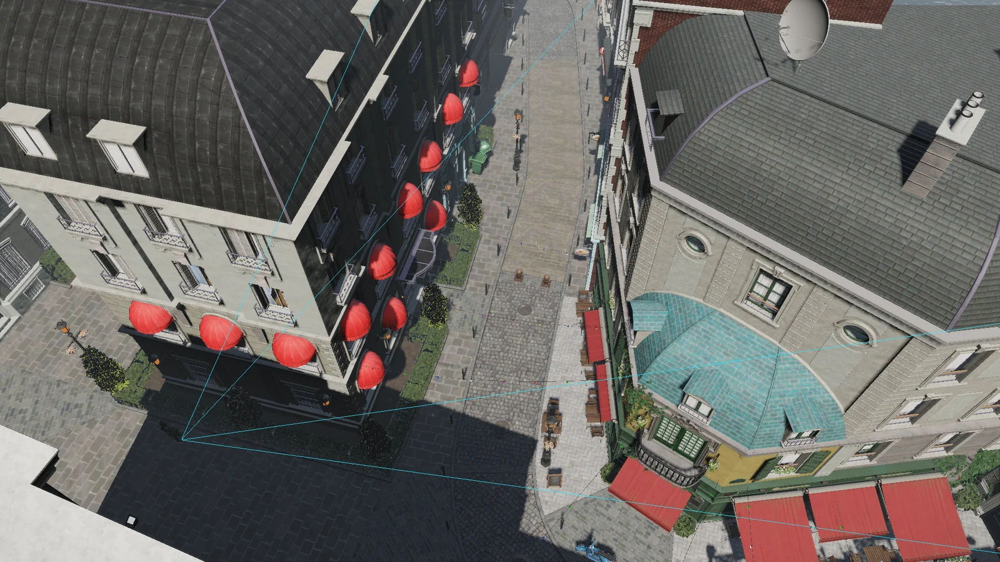

01 · Shadow
Realtime rendering engine
TinyRenderer
C++20과 DirectX 12로 구현한 개인 렌더링 엔진
장면과 에셋을 준비하고 렌더 패스를 구성한 뒤, RHI를 거쳐 GPU 명령을 실행하는 렌더링 흐름을 구현했습니다.

Scope
구현 범위
- 엔진 코어
- 장면과 에셋 관리, 렌더 패스 구성, GPU 명령 기록과 성능 측정을 구현했습니다.
- RHI 계층
- 현재는 DirectX 12 백엔드를 사용하며, Vulkan 백엔드 확장을 고려해 렌더링 코드와 그래픽스 API 구현부 사이에 공통 자원과 명령 인터페이스를 두었습니다.
- 외부 라이브러리
- tinygltf·Assimp·DirectXTex는 모델과 이미지 파일을 읽는 데 사용하며, 읽어온 데이터는 엔진 전용 중간 데이터로 변환해 에셋 관리와 렌더링에 사용합니다.
Architecture
엔진의 한 프레임 렌더링 경로
Frame inputs
동일 계층의 입력
장면 상태
카메라 · 오브젝트
조명 · 애니메이션
조명 · 애니메이션
엔진 에셋
모델 · 텍스처
머터리얼 · 셰이더
머터리얼 · 셰이더
Frame preparation
장면 상태와 에셋 참조를 현재 프레임에 반영
카메라 · 오브젝트 변환 · 조명 · 애니메이션 결과 갱신
↓
Render pipeline
활성 렌더 패스가 draw와 dispatch 작업을 구성
렌더 패스 순서 · 가시성 판정 · 머터리얼과 파이프라인 연결
↓
RHI
자원과 파이프라인을 바인딩하고 공통 명령을 기록
draw · dispatch · copy · 자원 상태 전환
↓
DirectX 12 backend
RHI 작업을 DirectX 12 명령으로 변환해 제출
Command List 기록 · Queue 제출 · 동기화
↓
GPU
제출된 명령을 실행하고 렌더링 결과를 생성
graphics · compute · copy 작업 실행
↓
Frame completion
화면을 출력하고 완료된 GPU 작업을 정리
Present · 완료 상태 확인 · 임시 자원 회수
Rendering
렌더링 기능과 진단
02 · Ambient occlusion
SSAO / GTAO comparison

03 · Spatial structure
binned-SAH BVH visualization
04 · Visibility
GPU visibility culling A/B
| GPU 구간 | 적용 전 | 적용 후 |
|---|---|---|
| Geometry pass | 6.09 ms | 4.85 ms |
| GPU visibility pass | — | 0.24 ms |
Geometry pass -20.4%Frustum + HZB visibility pass 비용은 별도 구간으로 함께 표시
